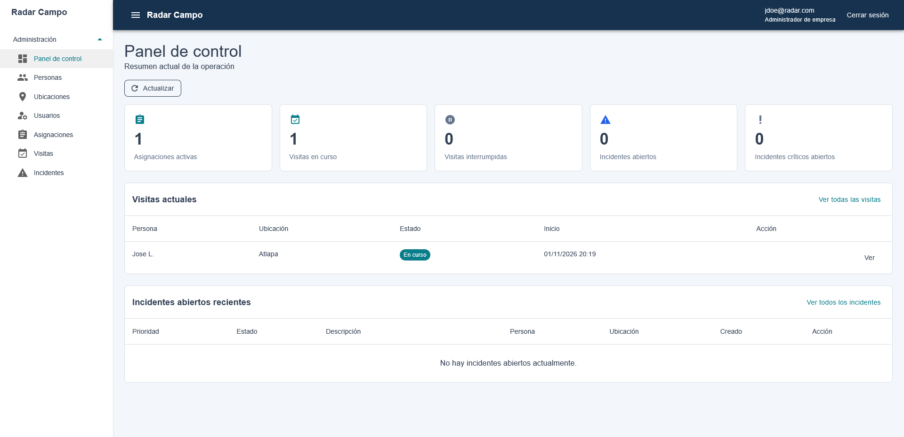
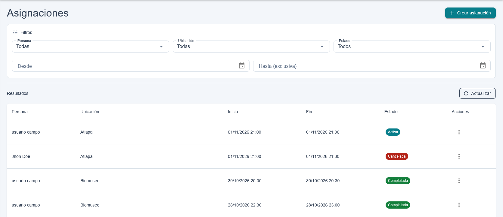
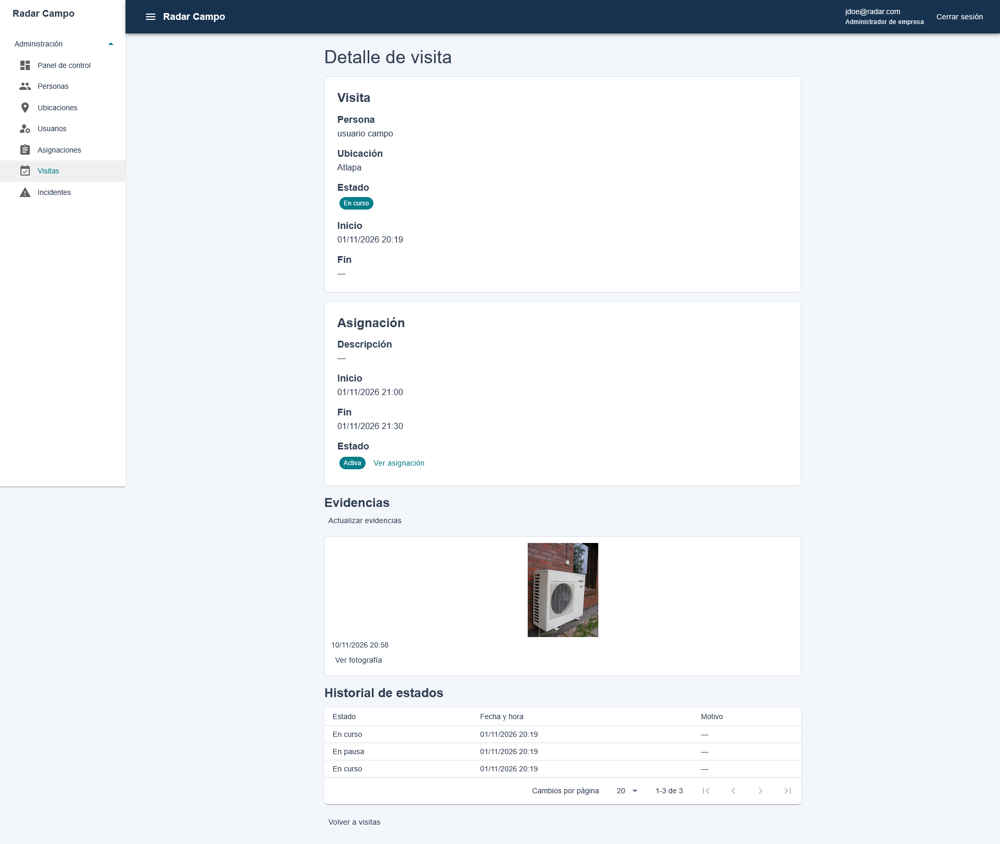
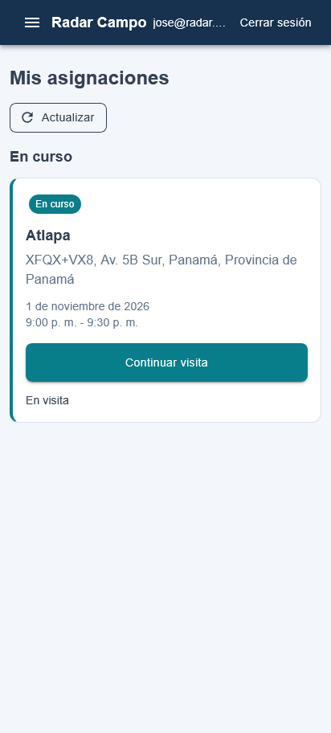
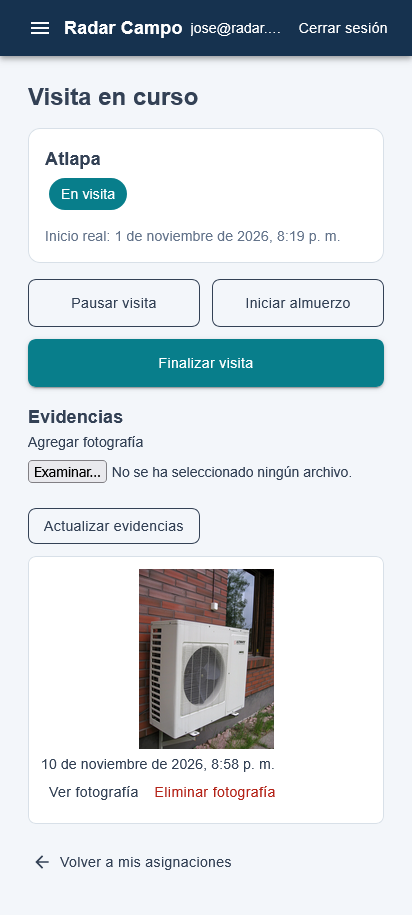

Asignaciones
Planifica y organiza las actividades del personal, asociándolas con personas, ubicaciones y horarios.
RadarWM
RadarWM es una plataforma para gestionar asignaciones, registrar visitas, reportar incidencias y centralizar evidencias desde un solo lugar.
Conoce las herramientas que ofrece RadarWM para organizar actividades, registrar su ejecución y mantener información centralizada sobre las operaciones.
Planifica y organiza las actividades del personal, asociándolas con personas, ubicaciones y horarios.
Registra y consulta la ejecución de las actividades asignadas, incluyendo sus cambios de estado.
Registra situaciones reportadas durante las operaciones y permite dar seguimiento a su estado.
Permite adjuntar y consultar archivos que documentan visitas e incidencias.
Administra la información del personal que participa en las actividades operativas.
Registra y administra los lugares donde se realizan las actividades.
RadarWM permite organizar las actividades operativas, registrar su ejecución y consultar la información generada durante el proceso.
Un administrador o supervisor organiza una asignación, indicando la persona responsable, la ubicación y el horario de la actividad.
El personal asignado registra el inicio de la visita, sus cambios de estado y la finalización de la actividad.
Durante la operación se pueden registrar incidencias y adjuntar evidencias para documentar las actividades realizadas o las situaciones reportadas.
El personal autorizado puede consultar las asignaciones, el estado de las visitas y la información registrada durante las operaciones.
Explora algunas de las pantallas de RadarWM y conoce cómo se organizan y registran las actividades operativas.
Herramientas para organizar asignaciones, consultar visitas y dar seguimiento a las actividades operativas.



Interfaz adaptada a dispositivos móviles para consultar asignaciones y registrar las actividades realizadas.

